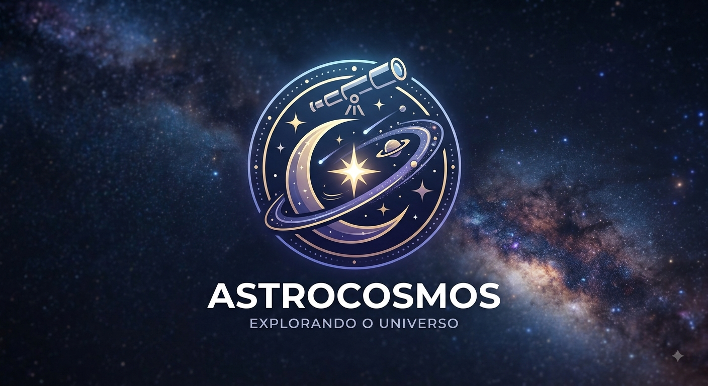

O que é Astronomia?
A Astronomia é a ciência que estuda o universo e tudo o que existe fora da atmosfera da Terra, como planetas, estrelas, cometas e galáxias.
Para entender melhor o espaço, essa ciência se divide em algumas áreas principais:
- Astrofísica: estuda como as estrelas e galáxias funcionam e evoluem.
- Cosmologia: investiga a origem e o futuro de todo o universo.
- Planetologia: analisa planetas, luas e sistemas solares.
- Astrobiologia: busca sinais de vida fora da Terra.